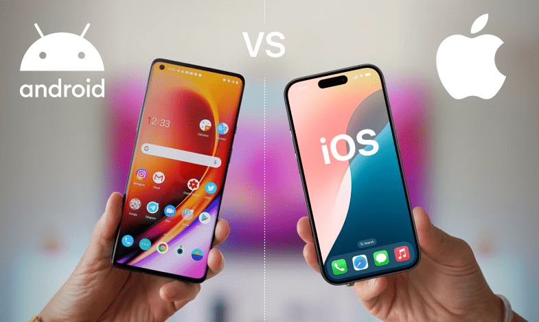

iOS vs. Android Development: Which Platform Reigns Supreme?
September 25, 2024 by Navauldo Sharpe
When it comes to mobile app development, the choice between iOS and Android is often a tough one. iOS, with its tightly controlled ecosystem and consistent hardware, offers developers a more uniform environment, ensuring a smooth user experience across various Apple devices. Its Swift programming language is known for being fast, secure, and easy to learn, making it an ideal choice for developers aiming for high performance and seamless integration with Apple services.
On the other hand, Android's open-source nature provides developers with more flexibility and customization options. It caters to a broader range of devices, giving developers access to a larger audience globally. Android development is typically done using Java or Kotlin, offering a rich set of tools and libraries. While iOS may be the preferred choice for a polished, high-end user experience, Android offers more freedom and greater market reach. The choice ultimately depends on the goals and resources available to the developer.